Project 4: Generative Models — VAE & DCGAN
Objective
- Implement a basic Autoencoder and Variational Autoencoder (VAE) trained on MNIST to understand latent space structure and generation.
- Implement a Deep Convolutional GAN (DCGAN) trained on the Pokémon dataset to generate 64×64 RGB images.
- Analyze training dynamics, compare architectural choices (LeakyReLU vs ReLU), and visualize outputs for each model.
Dataset & Setup
- Part 1: MNIST — 60,000 grayscale 28×28 handwritten digit images.
- Part 2: Pokémon dataset — 1,638 RGB images, resized to 64×64.
- All models trained on NVIDIA GPU using CUDA. Framework: PyTorch with torchvision.
Part 2: Pokémon | 1,638 images | Output size: 64×64 RGB | Noise dim: 100
Part 1: Autoencoder & VAE (MNIST)
Task 1 — Basic Autoencoder
A fully connected autoencoder trained on MNIST with three latent dimensionalities: 2, 8, and 32.
- Encoder:
784 → 256 → ReLU → latent_dim - Decoder:
latent_dim → 256 → ReLU → 784 → Sigmoid - Loss: Binary Cross-Entropy (BCE) | Optimizer: Adam, lr=1e-3, 20 epochs
Reconstruction Results
Top row = original, bottom row = reconstruction. Fidelity improves significantly with larger latent dimension.
latent_dim = 2 — Blurry and imprecise. Only 2 values encode all digit variation; fine stroke detail is lost.
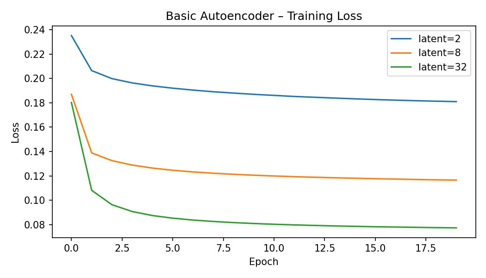
latent_dim = 8 — Noticeably sharper. Stroke thickness and digit curvature are well preserved.
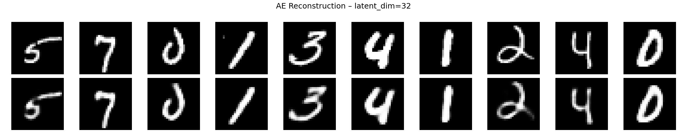
latent_dim = 32 — Near-perfect. Reconstructions almost indistinguishable from originals.
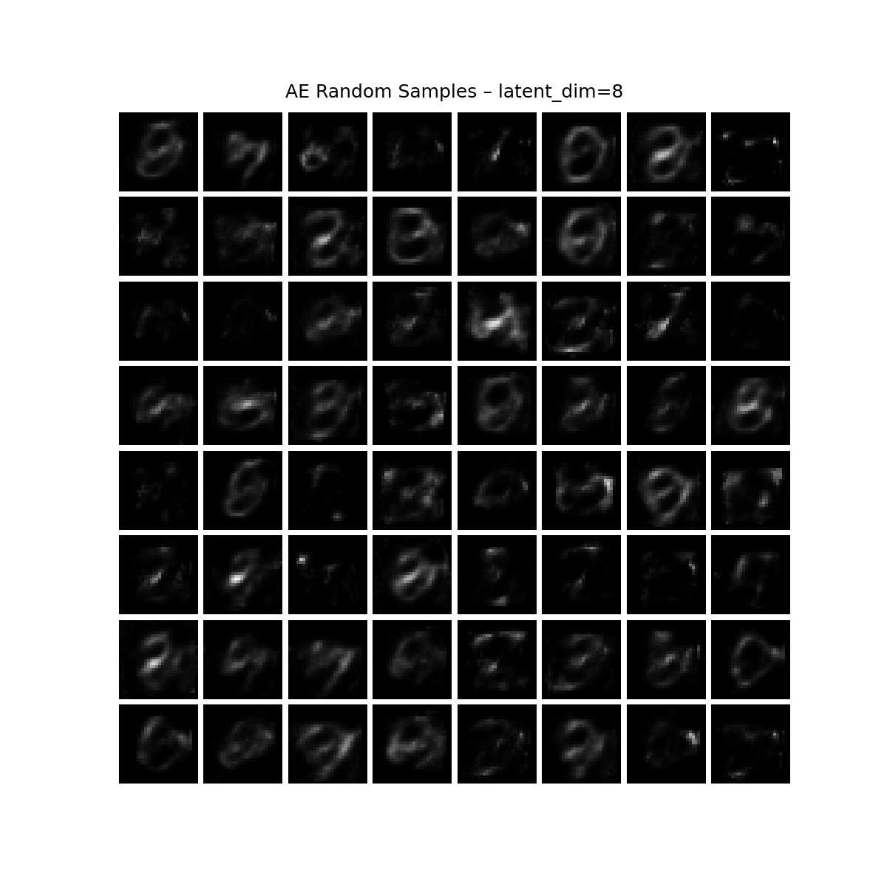
.png)
| Latent Dim | Final BCE Loss | Reconstruction Quality |
|---|---|---|
| 2 | 0.1810 | Blurry — rough shapes only |
| 8 | 0.1165 | Sharp — strokes and curves preserved |
| 32 | 0.0772 | Near-perfect reconstruction |
Random Sampling from AE Latent Space
Random vectors sampled from N(0,I) and decoded — tests whether the latent space supports generation.
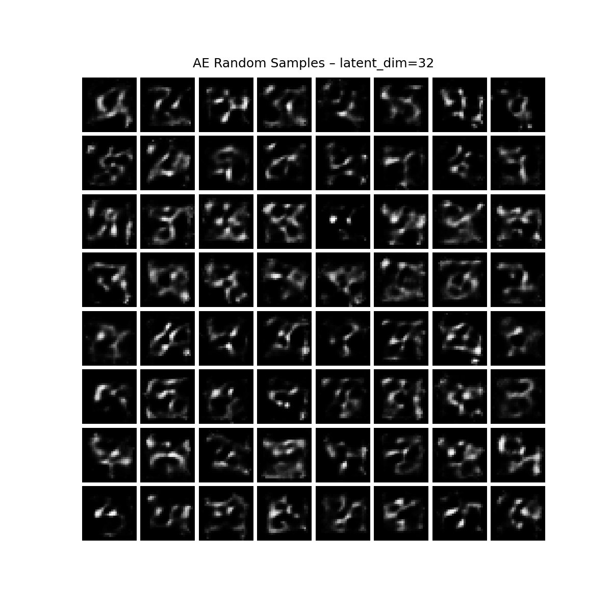
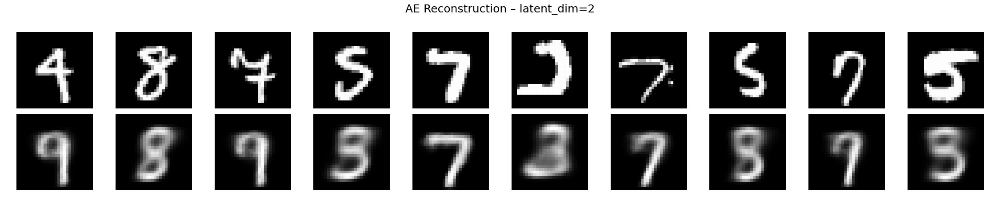
Task 2 — Variational Autoencoder (VAE)
A VAE adds a probabilistic bottleneck — the encoder outputs a distribution (μ, σ²) instead of a single point. KL divergence regularizes the latent space toward N(0,I), enabling generation.
- Encoder:
784 → 256 → μ (dim 2), log σ² (dim 2) - Reparameterization:
z = μ + ε·σ, whereε ~ N(0,I) - Loss: ELBO = BCE(x_recon, x) + KL( N(μ,σ²) ‖ N(0,I) )
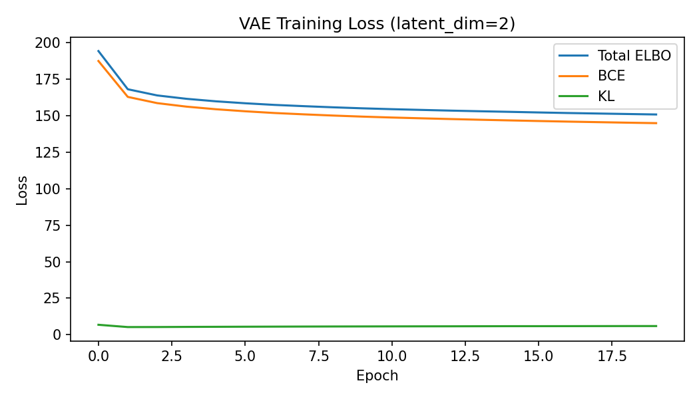
| Epoch | Total ELBO | BCE | KL |
|---|---|---|---|
| 5 | 159.82 | 154.40 | 5.43 |
| 10 | 155.02 | 149.34 | 5.68 |
| 15 | 152.62 | 146.76 | 5.86 |
| 20 | 150.81 | 144.87 | 5.94 |
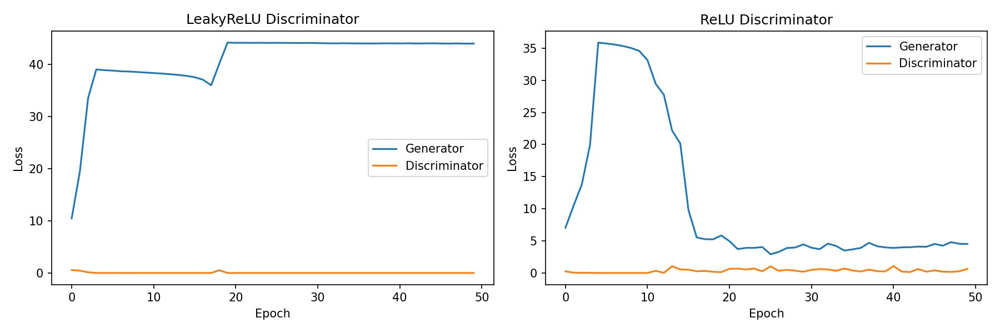
Latent Space Grid Visualization
A 2D grid swept over the latent space and each point decoded — shows how the VAE organizes digit classes spatially.
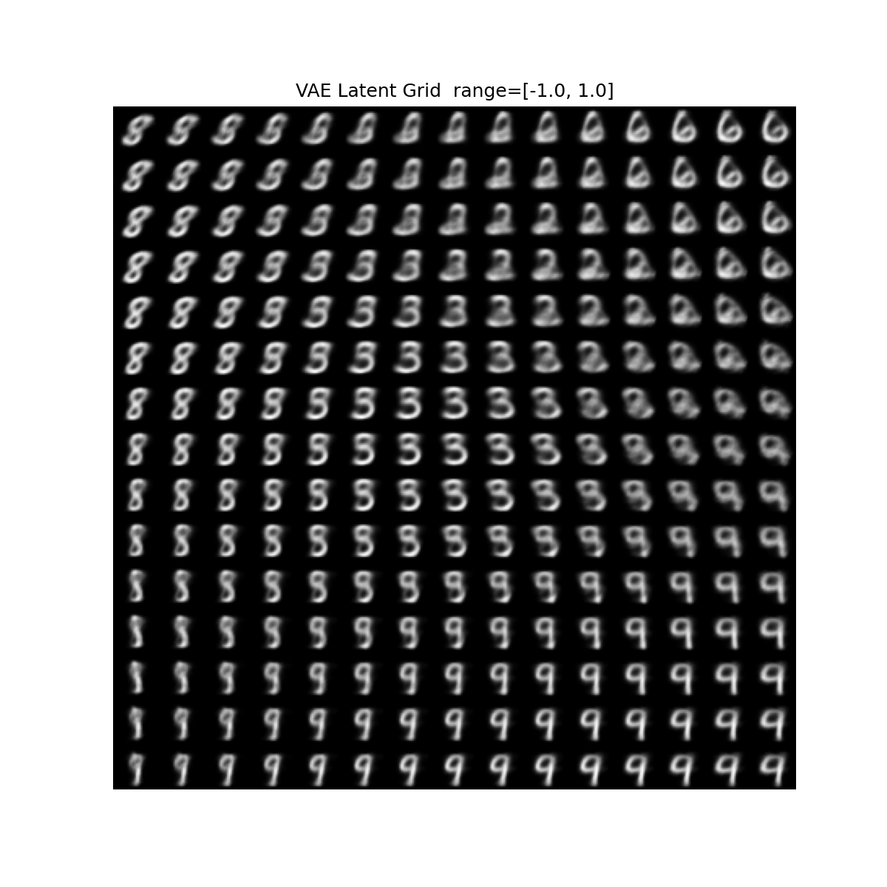
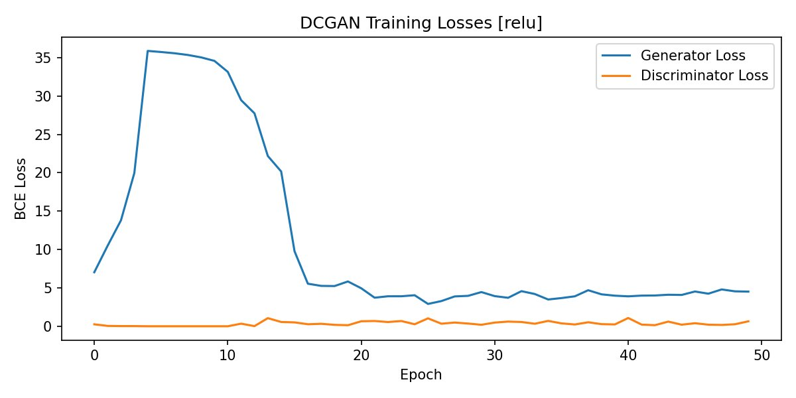
Part 2: Deep Convolutional GAN (DCGAN)
Task 1 — Architecture & Implementation
- Generator: 5 transposed conv blocks (
ConvTranspose2d → BatchNorm → ReLU),Tanhoutput. Channels: 100→512→256→128→64→3. - Discriminator: 4 conv blocks (
Conv2d → BatchNorm → LeakyReLU(0.2)),Sigmoidoutput. Channels: 3→64→128→256→512→1. - Adam optimizer, lr=2e-4, β₁=0.5 | 50 epochs | Batch size 64 | Weights initialized from N(0, 0.02)
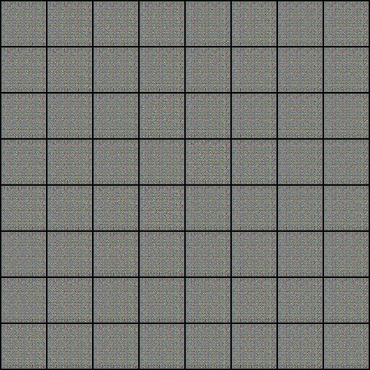
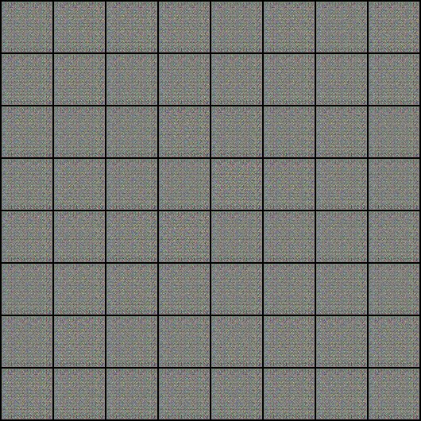
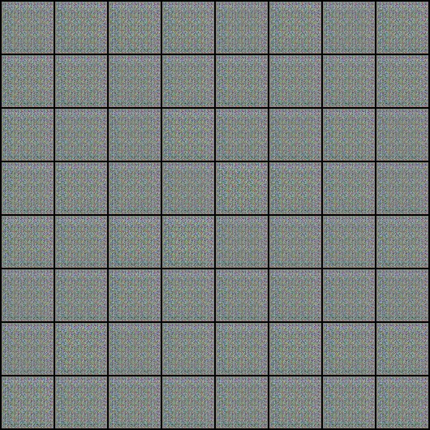
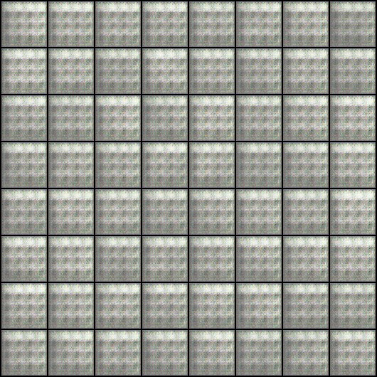
Task 2 — LeakyReLU vs ReLU in Discriminator
The DCGAN paper recommends LeakyReLU in the discriminator. We compare both on this small dataset.
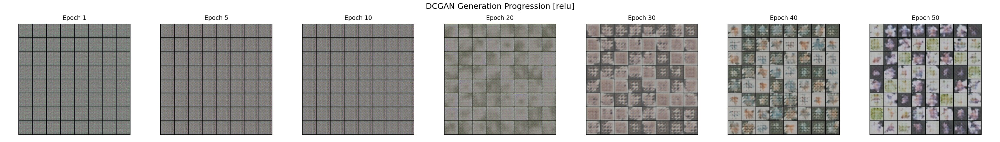
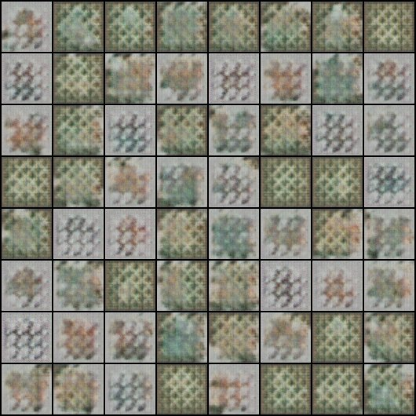
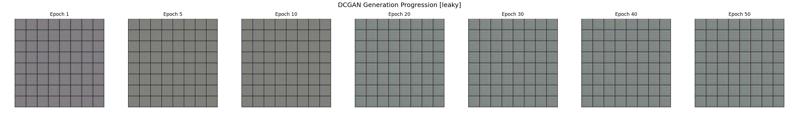
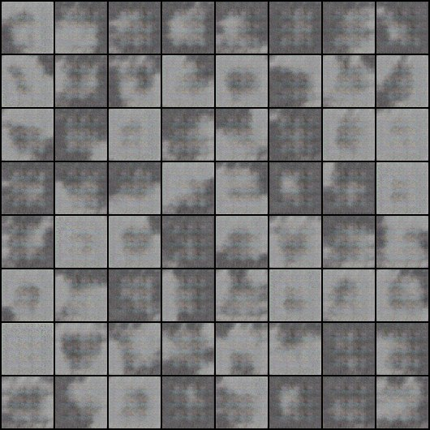
| Setting | D Loss (final) | G Loss (final) | Stability | Image Quality |
|---|---|---|---|---|
| LeakyReLU | ~0.0000 | ~44.0 | ❌ Collapsed | Gray noise |
| ReLU | ~0.3–0.6 | ~4.0–5.0 | ✅ Stable | Pokémon-like shapes |
Epoch 10/50 | G: 38.46 D: 0.0003 ← generator stuck, no gradient signal
Epoch 50/50 | G: 44.03 D: 0.0000 ← flatlined for 47 epochs
Epoch 18/50 | G: 5.26 D: 0.317 ← recovery begins
Epoch 50/50 | G: 4.51 D: 0.644 ← stable adversarial equilibrium
Discussion
Key Takeaways
- Latent dimension matters. AE reconstruction improves from dim=2 (loss 0.181) to dim=32 (0.077), but larger dims make random sampling worse — more dimensions means a sparser, less structured latent space.
- KL regularization enables generation. The VAE latent grid shows smooth digit transitions at ±1.0 — spatial organization of digit classes emerging from the ELBO objective alone, with no class labels.
- GAN stability is dataset-size sensitive. LeakyReLU caused immediate mode collapse on 1,638 images while ReLU produced stable training — standard GAN recommendations assume much larger datasets.
- Mode collapse warning signs. D loss → 0, G loss → large constant, outputs identical across all noise inputs, losses stop changing across epochs.
References
- Kingma & Welling (2013) — Auto-Encoding Variational Bayes
- Radford et al. (2015) — Unsupervised Representation Learning with Deep Convolutional GANs
- VAE Tutorial — medium.com/@rekalantar
- DCGAN Reference — d2l.ai Chapter on GANs